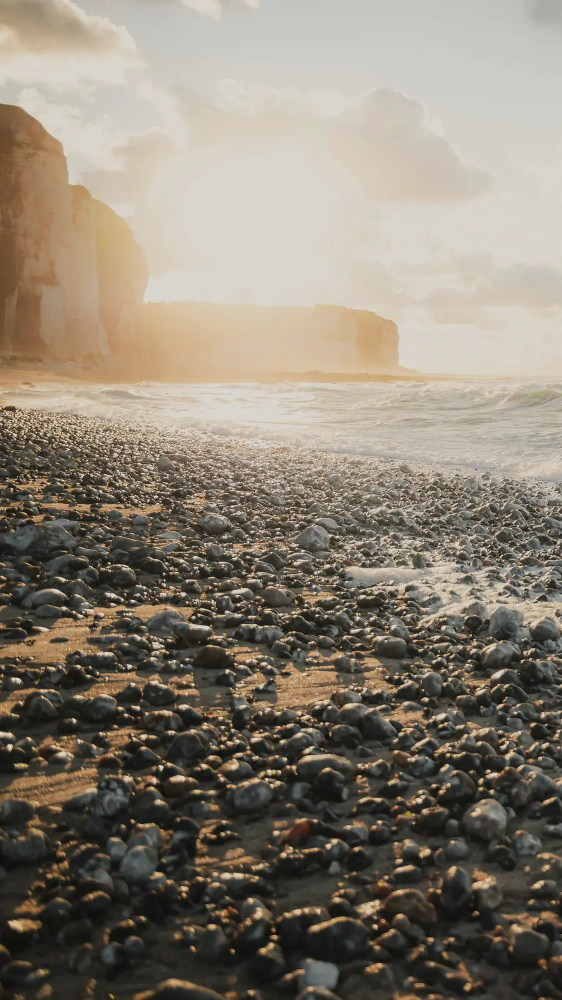

The Shore · evening
Ground yourself.
The 5-4-3-2-1 exercise: use your senses to come back to right now, one step at a time.
Let’s come back to right here.
Five small steps, one at a time. Go as slowly as you like.
Only on this screen. Never saved or sent, and cleared when you leave.
This was one Urge Walk tool. The app adds walks, your own reasons and check-ins.
Urge Walk is not a crisis service and isn’t a substitute for professional care. In the US, call or text 988 (Suicide & Crisis Lifeline, 24/7). Outside the US, find a helpline.